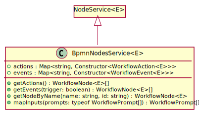

Type parameters
-
E
Hierarchy-Diagram
{kind=link}
Legend
 class
class
 public property
public property
 public method
public method
Hierarchy
-
NodeService<E>
- BpmnNodesService
Index
Constructors
Properties
Methods
Constructors
constructor
-
Type parameters
-
E
Parameters
-
nodes: Constructor<WorkflowNode<E>>[]
-
inputs: WorkflowPrompt[]
-
utils: UtilsService
Returns BpmnNodesService<E>
-
Properties
actions
events
Methods
getActions
-
Returns WorkflowNode<E>[]
An array of action nodes.
getEvents
-
Get all the nodes that are events, and if the trigger parameter is true, only get the ones that are triggers
Parameters
-
trigger: boolean = false
Returns WorkflowNode<E>[]
An array of WorkflowEvent
instances. -
getNodeByName
-
"Given a name, return a new instance of the node with that name."
Parameters
-
name: string
The name of the node you want to create.
-
Optional id: string
Returns WorkflowNode<E>
A new instance of the node class.
-
mapInputs
-
It takes an array of prompts, and returns an array of inputs
Parameters
-
prompts: typeof WorkflowPrompt[]
typeof WorkflowPrompt[]
Returns WorkflowPrompt[]
An array of input instances.
-
The function is a bit more complicated than that, but that's the gist of it